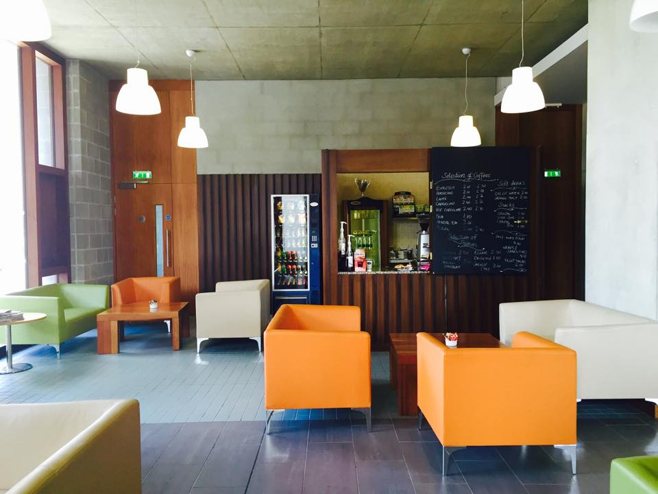

Graduate Entry Medical School
Useful Information
General Information
The Graduate Entry Medical School Building was designed by Grafton Architects and completed in 2012. With an area of 4,295m2, the building is home to the Graduate Entry Medical School (GEMS) and features a lecture theatre, 12 problem-based learning rooms, 2 classrooms, 2 computer labs, a significant medical research area and a restaurant/coffee bar. Constructed on the north side of the River Shannon and accessible by pedestrian bridge from the south campus, the GEMS building and adjacent accommodation buildings for GEMS students are located in an area that will ultimately become a focal point for expansion of the north campus.
Medical School Website
Welcome to the Graduate Entry Medical School. If you want to know more about GEMS, click below to go to our official website.
Official Website
Café
Open Monday to Thursday from 8.30 to 16.00 and Friday from 8.30 to 15.00, the café serves many of the Café Noir specialities, including a large selection of homemade scones, pastries, cakes and biscuits. Hot and cold sandwiches made with hand-crafted breads and a great choice of fresh ingredients are on the menu, together with homemade soups and, of course, freshly roasted organic Fair Trade coffees, teas and soft drinks.
Café Website